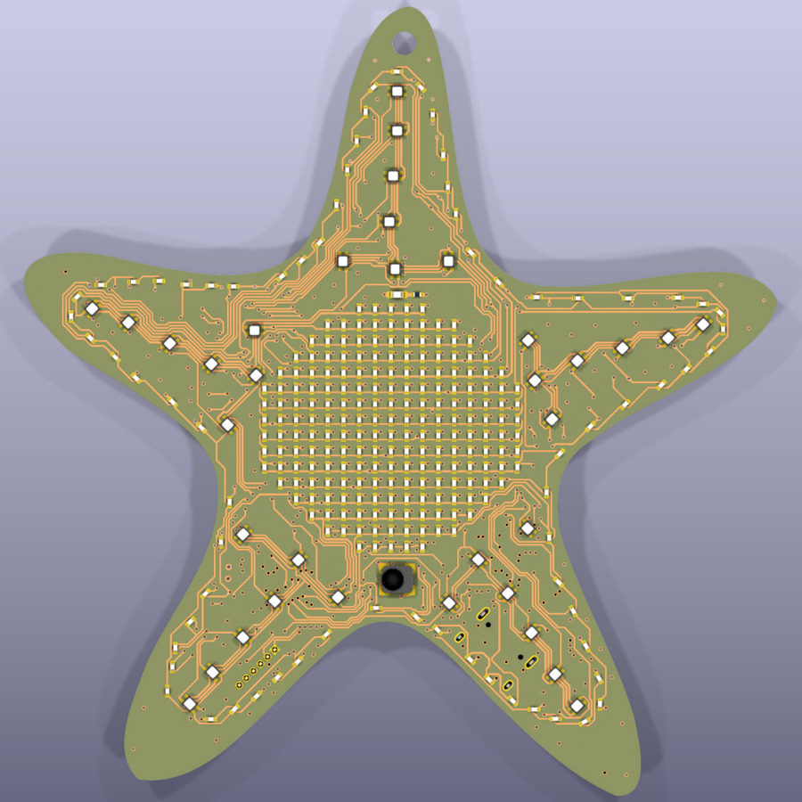

Click or drag across the round LEDs to paint. Diamond-shaped dots are 4-pin RGB accent LEDs -- click one to set its color. Every LED on the board is addressable.
What the real board looks like

Click or drag across the round LEDs to paint. Diamond-shaped dots are 4-pin RGB accent LEDs -- click one to set its color. Every LED on the board is addressable.

Bring-up/debugging tool: read and write the LEDPWM peripheral's
raw registers directly. Writes are raw pokes with no validation
-- the same kind of direct register access
CMD_RAW_TEST/CMD_SET_PWM_PIN already
allowed for column enables specifically, generalized to every
register. See docs/LEDPWM_MATRIX.md for the
hardware background (in particular: PWM_PIN's
bit0-as-gate behavior, and why SWITCH/COM_E/
PWM_PIN/CTRL must each be written as
one atomic 32-bit group rather than as separate bytes).